Operational Modal Analysis 2
Smart Civil Structures: L10
0.1 Discrete State-Space Equation (SSE)
Continuous-time: \[\dot{\mathbf{x}}(t)=\mathbf{A}\mathbf{x}(t)+\mathbf{B}\mathbf{u}(t),\quad \mathbf{y}(t)=\mathbf{C}\mathbf{x}(t)+\mathbf{D}\mathbf{u}(t)\]
Discrete-time (sampling period \(T_s\)): \[\mathbf{x}_{k+1}=\mathbf{A}_d\mathbf{x}_k+\mathbf{B}_d\mathbf{u}_k,\quad \mathbf{y}_k=\mathbf{C}_d\mathbf{x}_k+\mathbf{D}_d\mathbf{u}_k\]
Where:
\(\mathbf{x}_k=\mathbf{x}(kT_s)\), \(\mathbf{A}_d=e^{\mathbf{A}T_s}\), \(\mathbf{B}_d=\int_0^{T_s} e^{\mathbf{A}\tau}\mathbf{B}\,d\tau\), and usually \(\mathbf{C}_d=\mathbf{C}\), \(\mathbf{D}_d=\mathbf{D}\)
0.2 Modal Parameters from \(\mathbf{A}\) and \(\mathbf{C}\)
Given the continuous-time state matrix \(\mathbf{A}\):
Eigen-decomposition \[\mathbf{A}\mathbf{v}_i=\lambda_i\mathbf{v}_i, \quad \lambda_i = -\zeta_i\omega_{n,i} \pm j\,\omega_{d,i}\]
Natural frequency and damping
\[\omega_{n,i}= |\lambda_i|,\quad \zeta_i=-\frac{\text{Re}(\lambda_i)}{\omega_{n,i}}, \quad f_{n,i}=\frac{\omega_{n,i}}{2\pi}\]
0.3 Modal Parameters from \(\mathbf{A}\) and \(\mathbf{C}\)
- Mode shapes from output matrix If \(\mathbf{y}=\mathbf{C}\mathbf{x}\) and \(\mathbf{V}=[\mathbf{v}_1,\dots,\mathbf{v}_r]\), \[\boldsymbol{\Phi}=\mathbf{C}\mathbf{V}\] Each column of \(\boldsymbol{\Phi}\) is a (possibly complex) mode shape.
0.4 Modal Parameters from \(\mathbf{A}_d\) and \(\mathbf{C}_d\)
\(\mathbf{A}=\mathbf{V}\mathbf{\Lambda}\mathbf{V}^{-1}\), then
\[ \begin{align} \mathbf{A}_d &= e^{\mathbf{A}T_s} =\sum_{k=0}^{\infty}\frac{(\mathbf{A}T_s)^k}{k!} =\mathbf{V}\left(\sum_{k=0}^{\infty}\frac{\mathbf{\Lambda}^k T_s^k}{k!}\right)\mathbf{V}^{-1}\\ &=\mathbf{V}\begin{bmatrix} e^{\lambda_1 Ts} & 0 & \cdots & 0\\ 0 & e^{\lambda_2 Ts} & \cdots & 0\\ \vdots & \vdots & \ddots & \vdots\\ 0 & 0 & \cdots & e^{\lambda_n Ts} \end{bmatrix}\mathbf{V}^{-1} =\mathbf{V}\mathbf{M}\mathbf{V}^{-1} \end{align} \]
\[ \mu_i = e^{\lambda_i T_s}, \lambda_i = \ln(\mu_i)/T_s \]
0.5 Modal Parameters from \(\mathbf{A}_d\) and \(\mathbf{C}_d\)
Given the discrete-time state matrix \(\mathbf{A}_d\) (sampling period \(T_s\)):
- Eigen-decomposition on \(\mathbf{A}_d\)
\[\mathbf{A}_d\mathbf{v}_i=\mu_i\mathbf{v}_i, \quad \lambda_i=\frac{\ln(\mu_i)}{T_s}\]
- Use the formulae for the continous \(\mathbf{\lambda}_i\)
0.6 Cross Spectral Density
Power Spectral Density \(P_{yy}(f)\) vs Cross Spectral Density \(P_{xy}(f)\)
\[ \begin{align} P_{yy}(f) &= \lim_{T\to\infty} \frac{1}{T}\,Y(f)Y(f)^* = \lim_{T\to\infty} \frac{1}{T}\,|Y(f)|^2 \\ P_{xy}(f) &= \lim_{T\to\infty} \frac{1}{T}\,X(f)Y(f)^* \end{align} \]
1 System Identification Concept
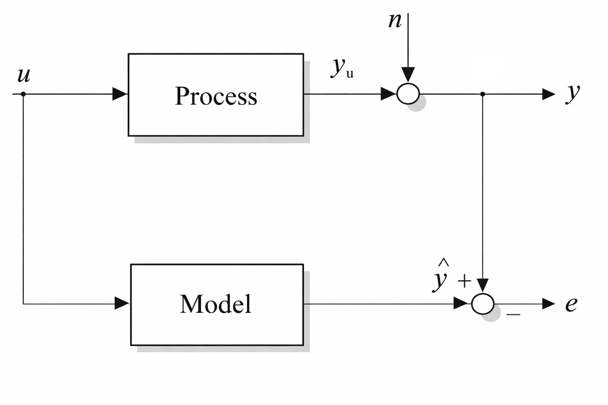
System Identification is the process to build mathematical models of dynamical systems from measured data, i.e., input signal and/or output response signals.
In the figure, \(u\) is input to a process (in our case a structure), \(y_u\) is the output response (in our case structural responses such as disp, acc, tilt, etc). \(n\) is measurement noise added to \(y_u\) to form \(y\). By system identification, a mathematical model is constructed to predict \(\hat{y}\), with error \(e = \hat{y} - y\). The model is created and modified to minimise error \(e\) as much as possible.
1.1 Experimental Modal Analysis
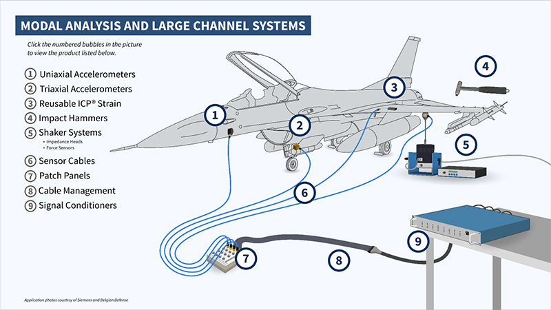
\[ Y(\omega) = H(\omega) X(\omega) \to H(\omega) = Y(\omega)/X(\omega) \]
Experimental Modal Analysis has been used in Mechanical and Aerospace Engineering, where target structures are typically small enough to be excited by a shaker. EMA aims to get the transfer function \(H(j\omega)\) and modal parameters: natural frequencies \(f_i\), damping ratios \(\psi_i\), and mode shapes \(\phi_i\).
But this is not readily applicable to civil infra-structures due to large size of civil infra-structures. We don’t cover this in this module.
- Excitation on Civil Infrastructure?
- Not easy, the Output-only version of EMA is OMA
- Frequency Domain Decomposition (FDD)
- Stochastic Subspace Identification (SSI)
- Covariance Driven (SSI-cov)
- Data Driven (SSI-dat)
1.2 Frequency Domain Decomposition
We work in the frequency domain. The input and output spectra are related by the FRF matrix:
\[\mathbf{Y}(\omega) = \mathbf{H}(\omega) X(\omega)\]
Define the input and output power spectral density (PSD) matrices:
\[ \mathbf{G}_{xx}(\omega) = E\{X(\omega) X(\omega)^{*}\} \]
\[ \mathbf{G_{YY}}(\omega) = E\{\mathbf{Y}(\omega) \mathbf{Y}(\omega)^{*}\} \]
1.3 Frequency Domain Decomposition
\[ \begin{align} \mathbf{G_{yy}}(\omega) &= E\{\mathbf{Y}(\omega) \mathbf{Y}(\omega)^{*}\} \\ &= E\{\mathbf{H}(\omega) X(\omega) (\mathbf{H}(\omega) X(\omega))^{*}\} \\ &= E\{\mathbf{H}(\omega) X(\omega) X(\omega)^{*} \mathbf{H}(\omega)^{*}\} \\ &= \mathbf{H}(\omega) G_{xx}(\omega) \mathbf{H}(\omega)^{*} \end{align}\tag{1} \]
1.4 Frequency Domain Decomposition
If the input is white noise (constant PSD \(G_{xx}(\omega)=C\)), \(\mathbf{G_{yy}}(\omega)\) around the \(k\)-th natural frequency will be dominated by the corresponding mode,
\[ \begin{align} \mathbf{G_{yy}}(\omega) &\approx \frac{d_k \mathbf{\phi}_k \mathbf{\phi}_k^{*}}{- \operatorname{Re}{(\lambda_k)}} = c_k \mathbf{\phi}_k \mathbf{\phi}_k^{*} \tag{10} \end{align} \]
where \(c_k\) is a constant and \(\mathbf{\phi}_k\) is the \(k\)-th mode-shape.
1.5 Frequency Domain Decomposition
Compute \(P_{y_iy_j}(\omega_k)\) for \(i, j =1, \cdots, m\), where \(m\) is the number of measurement channels, and \(k=1, \cdots, \text{nfft/2}\).
Construct a 2D array for each frequency \(\omega_k\).
\[ \begin{bmatrix} P_{y_1y_1}(\omega_k) & P_{y_1y_2}(\omega_k) &\cdots & P_{y_1y_1}(\omega_k)\\ P_{y_2y_1}(\omega_k) & P_{y_2y_2}(\omega_k)& \cdots & P_{y_2y_N}(\omega_k) \\ \vdots & & \ddots & \\ P_{y_Ny_1}& \cdots & & P_{y_Ny_N}(\omega_k) \\ \end{bmatrix} \]
- Peform SVD on the above matrix to get singular values \(\sigma_i(\omega_k)\), singular vectors \(\mathbf{u}_i(\omega_k)\) for \(i=1, \cdots, m\).
1.6 Frequency Domain Decomposition
Construct a matrix of Singular Values \(\mathbf{SV}\) with each column of \([\sigma_1(\omega_k) \cdots \sigma_m(\omega_k)]^T\).
Plot rows of \(\mathbf{SV}\). This is a singular value plot.
Find the peak-frequency in the plot, these peak frequencies are the natural frequency estimates \(f_i\).
\[ \begin{align} \mathbf{G_{yy}}(j\omega_k) &\approx c_k \mathbf{\phi}_k \mathbf{\phi}_k^{*} \end{align} \]
By Singular Value Decomposition on \(\mathbf{G_{yy}}(\omega_k)\) at the peak frequency \(\omega_k\),
\[ \begin{aligned} \mathbf{G_{yy}}(\omega_k) &= \mathbf{U}\,\mathbf{\Sigma}\,\mathbf{U}^{*} \\ &= [\mathbf{u}_1\;\mathbf{u}_2\;\cdots] \mathrm{diag}(\sigma_1,\sigma_2,\ldots) [\mathbf{u}_1\;\mathbf{u}_2\;\cdots]^{*} \\ &\approx \sigma_1\,\mathbf{u}_1\,\mathbf{u}_1^{*} \end{aligned} \]
- At each frequency estimate, corresponding singular vector \(\mathbf{u}_i\) is the mode-shape estimate.
1.7 Stochastic Subspace Identification
Discrete-time stochastic state-space equations:
\[\mathbf{x}_{k+1}=\mathbf{A}\mathbf{x}_k+\mathbf{w}_k\] \[\mathbf{y}_k=\mathbf{C}\mathbf{x}_k+\mathbf{v}_k\]
with zero-mean white noises \(\mathbf{w}_k,\mathbf{v}_k\).
1.8 OMA Algorithms
| Method | Strengths | Limitations | Typical use |
|---|---|---|---|
| FDD | Simple, fast | Frequency resolution exists, no-damping estimation | Quick OMA screening |
| SSI‑cov | Robust for long stationary data | Assumes stationarity; needs long records | Ambient vibration with long data |
| SSI‑dat | Good for short data | Higher memory; sensitive to noise | Short or mildly non‑stationary data |
1.9 OMA Demo Using OoMA Toolbox1
4-DOF Shear Building

1.10 Equation of Motion
\[ \begin{align} \ddot{y_1}(t)&=\frac{1}{m_{1}}\left(-k_{1}y_{1}-c_{1}\dot{y_{1}}+k_{2}(y_{2}-y_{1})+c_{2}(\dot{y_{2}}-\dot{y_{1}})\right)\\ \ddot{y_2}(t)&=\frac{1}{m_{2}}\left(k_{2}(y_{1}-y_{2})+c_{2}(\dot{y_{1}}-\dot{y_{2}})+k_{3}(y_{3}-y_{2})+c_{3}(\dot{y_{3}}-\dot{y_{2}})\right)\\ \ddot{y_3}(t)&=\frac{1}{m_{3}}\left(k_{3}(y_{2}-y_{3})+c_{3}(\dot{y_{2}}-\dot{y_{3}})+k_{4}(y_{4}-y_{3})+c_{4}(\dot{y_{4}}-\dot{y_{3}})\right)\\ \ddot{y_4}(t)&=\frac{1}{m_{4}}\left(k_{4}(y_{3}-y_{4})+c_{4}(\dot{y_{3}}-\dot{y_{4}})\right) \end{align} \]
1.11 4DOF M-C-K Equation
\[ \mathbf{M}\ddot{\mathbf{y}}+\mathbf{C}\dot{\mathbf{y}}+\mathbf{K}\mathbf{y}=\mathbf{0} \]
where \(\mathbf{y}=[y_1; y_2; y_3; y_4]^T\)
\[ \mathbf{M}=\begin{bmatrix}m_1&0&0&0\\0&m_2&0&0\\0&0&m_3&0\\0&0&0&m_4\end{bmatrix},\quad \mathbf{C}=\begin{bmatrix}c_1+c_2&-c_2&0&0\\-c_2&c_2+c_3&-c_3&0\\0&-c_3&c_3+c_4&-c_4\\0&0&-c_4&c_4\end{bmatrix},\\ \mathbf{K}=\begin{bmatrix}k_1+k_2&-k_2&0&0\\-k_2&k_2+k_3&-k_3&0\\0&-k_3&k_3+k_4&-k_4\\0&0&-k_4&k_4\end{bmatrix} \]
1.12 SSE of n-DOF M-C-K System
The continuous‑time model is
\[\dot{\mathbf{z}}=\mathbf{A_c}\mathbf{z}+\mathbf{B_c}\mathbf{f}(t),\] \[\mathbf{y}=\mathbf{C_c}\mathbf{z}+\mathbf{D_c}\mathbf{f}(t),\]
where
\[\mathbf{A_c}=\begin{bmatrix}\mathbf{0}&\mathbf{I}\\ -\mathbf{M}^{-1}\mathbf{K}&-\mathbf{M}^{-1}\mathbf{C}\end{bmatrix}, \qquad \mathbf{B_c}=\begin{bmatrix}\mathbf{0}\\ \mathbf{M}^{-1}\end{bmatrix}.\]
\[\mathbf{C_c}=\begin{bmatrix}-\mathbf{M}^{-1}\mathbf{K}&-\mathbf{M}^{-1}\mathbf{C}\end{bmatrix}, \qquad \mathbf{D_c}=\mathbf{M}^{-1}.\]
1.13 Discretising a Continous SSE model
- Calcaulting Ad, Bd, Cd, and Dd
% In MATLAB, given continuous system A,B,C,D and sampling time Ts
sysc = ss(A,B,C,D); % continuous system
sysd = c2d(sysc, Ts, 'zoh'); % zero‑order hold (default), or 'tustin', 'foh', 'matched'.
Ad = sysd.A; Bd = sysd.B;
Cd = sysd.C; Dd = sysd.D;
% Or explicit ZOH formulars:
Ad = expm(A*Ts);
Bd = A\(Ad - eye(size(A)))*B; % valid if A is invertible
Cd = C;
Dd = D;1.14 How to simulate in MATLAB
- Discrete state-update (Manual)
% Given Ad,Bd,Cd,Dd, input u (size m x N), initial state x0
N = size(u,2);
n = size(Ad,1);
x = zeros(n,N+1);
y = zeros(size(Cd,1),N);
x(:,1) = x0;
for k = 1:N
y(:,k) = Cd*x(:,k) + Dd*u(:,k);
x(:,k+1) = Ad*x(:,k) + Bd*u(:,k);
end1.15 How to simulate in MATLAB
- Use MATLAB state-space simulation
sysd = ss(Ad,Bd,Cd,Dd,Ts); % Ts = sample time
% u should be N-by-m for lsim, t is N-by-1
t = (0:size(u,1)-1)'*Ts;
[y,t,x] = lsim(sysd, u, t, x0);1.16 The OMA_DEMO.mlx
1.17 Roving Test
When you want to measure more points than the number of accelerometers you have
The idea is you divide your acc sensors into two groups:
- Reference sensors: placed at fixed points
- Roving sensors: moves around multiple points
The mode shapes from multiple roving tests are stitched together using information from the reference sensors
1.18 A Suspension Bridge in UK
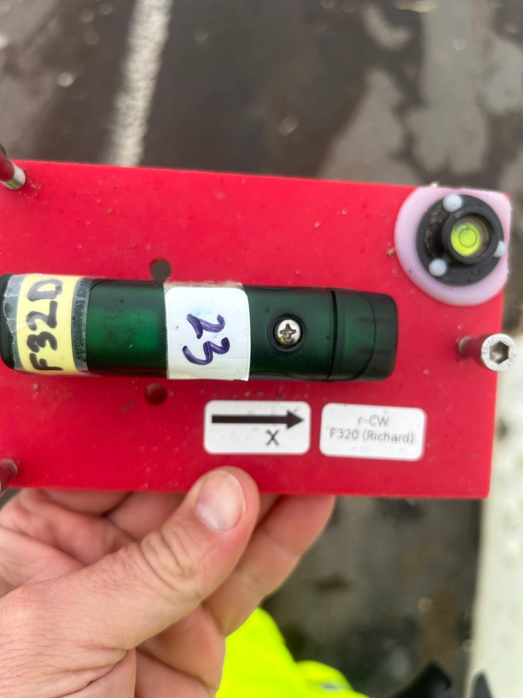
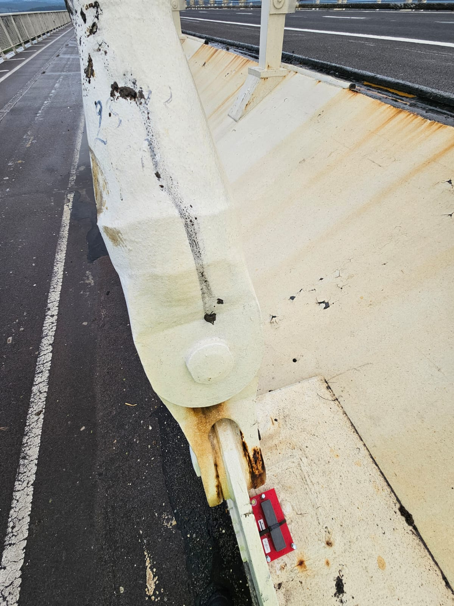
1.19 Roving Test
- 20 sensors (14 ref + 6 rovers), 4 setups, each 30 min long
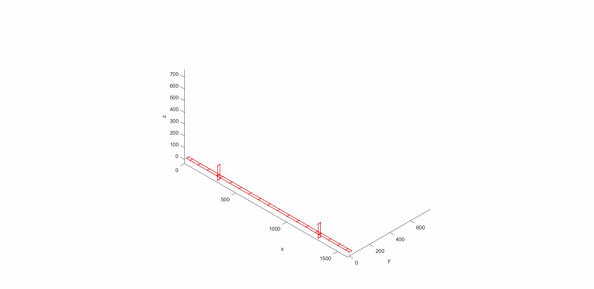
1.20 Coefficient of Variation
A measure of relative spread (variation scaled by the mean)
\[ \mathrm{CoV}=\frac{\sigma}{\mu}\times 100\% \] where \(\sigma\) = standard deviation, \(\mu\) = mean.
- Lower CV \(\rightarrow\) more consistent data relative to its mean.
- Higher CV \(\rightarrow\) more dispersed data relative to its mean.
1.21 Mode VS1
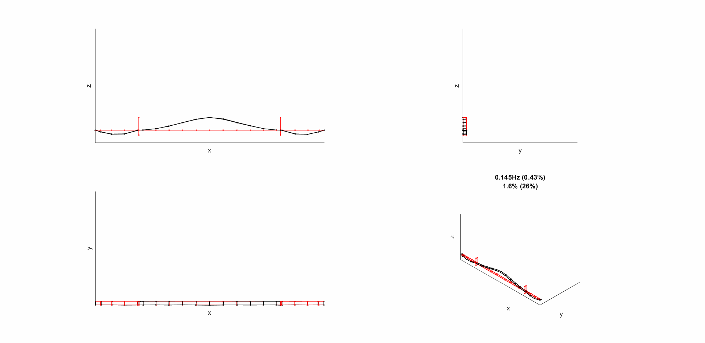
1.22 Mode VA1
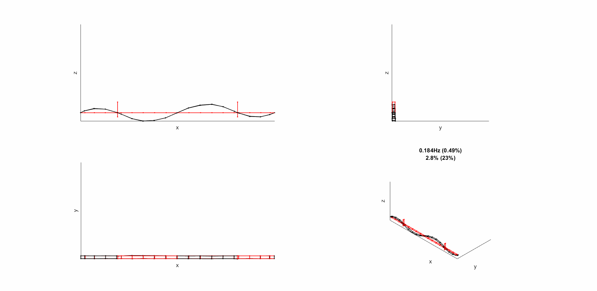
1.23 Mode VS2
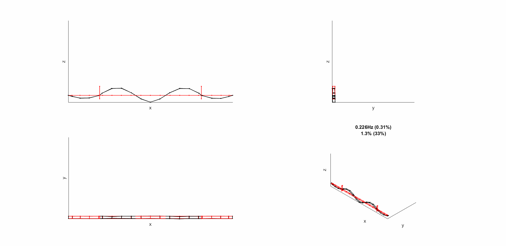
1.24 Mode SV1
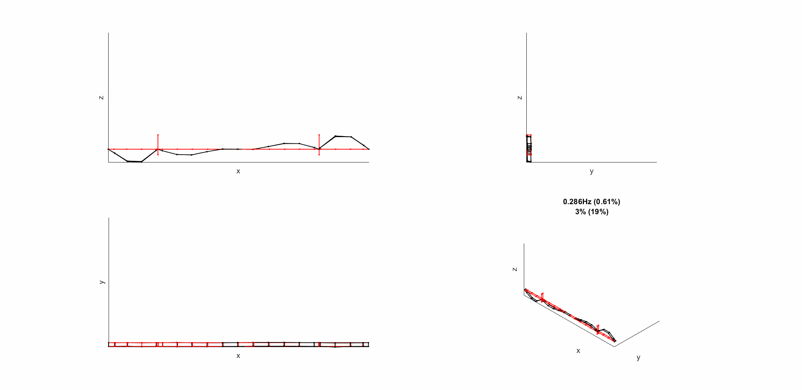
1.25 Mode SV2
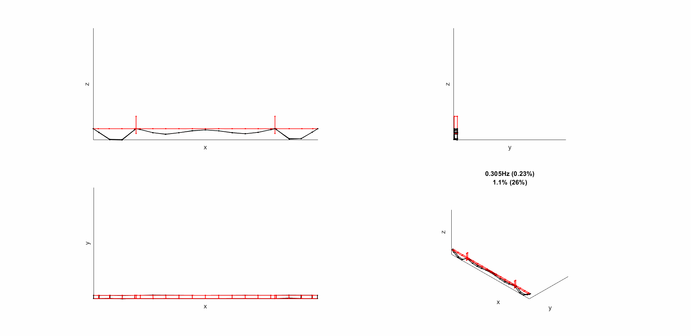
1.26 Mode VA2
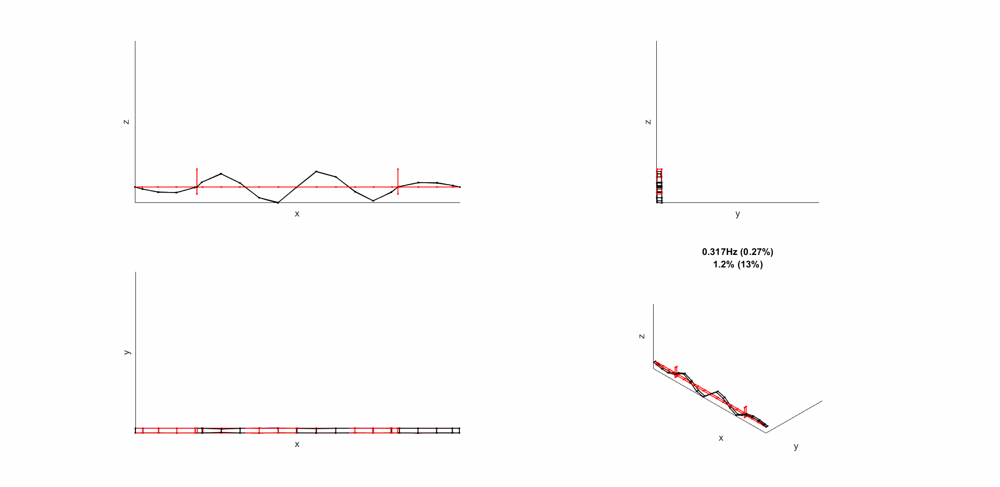
1.27 Mode T1
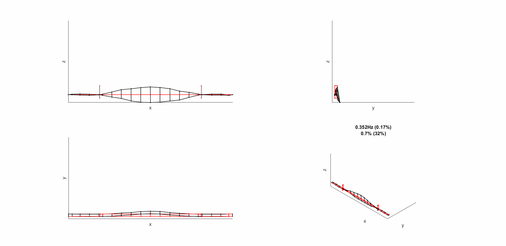
1.28 Mode L1
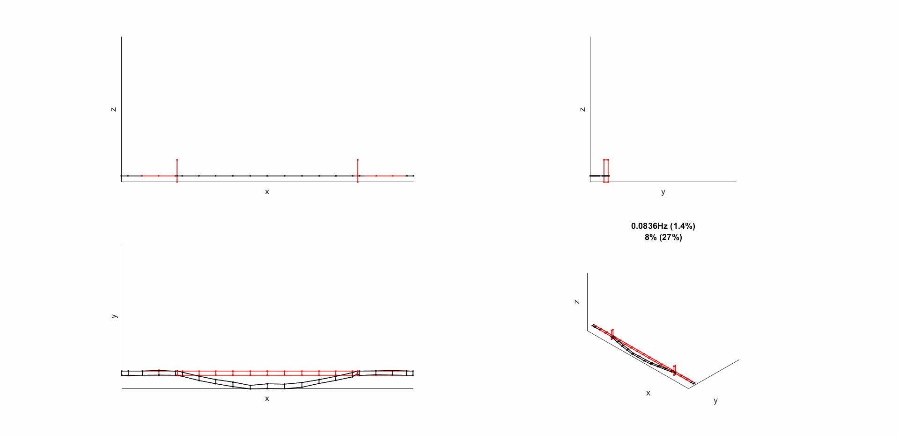
1.29 Mode L2
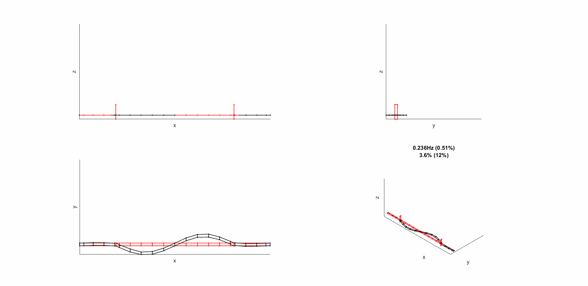
1.30 Mode L3
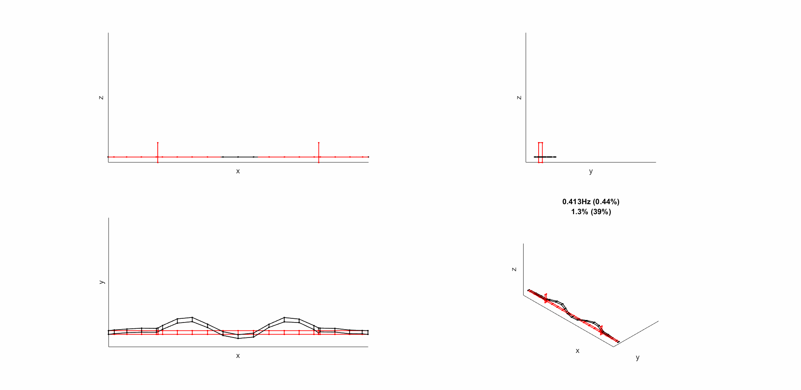
Footnotes
https://uk.mathworks.com/matlabcentral/fileexchange/68657-ooma-toolbox/files/html/ssi_liveExample_1.html?s_tid=srchtitle↩︎